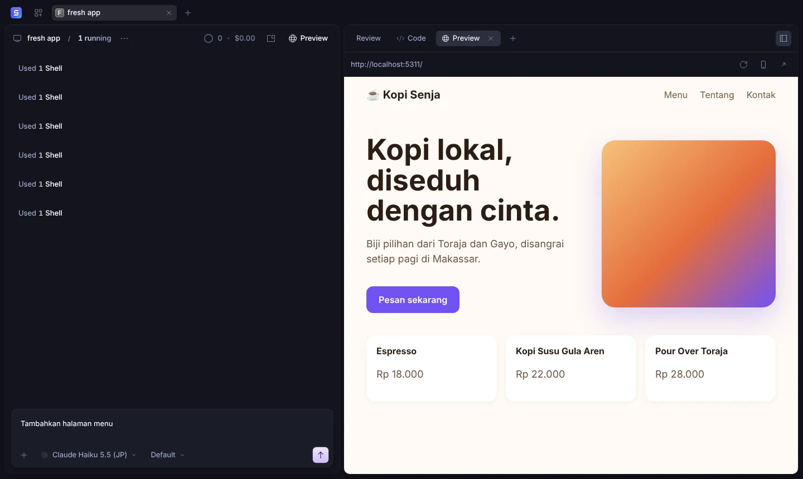

Describe the app.
Watch it run.
SuperVibeCode is a desktop app where you build apps by talking to an AI agent. It writes the code, starts the dev server, and shows your app live beside the chat. On your computer, with your models and your git.
Free and open source. macOS, Windows and Linux.
The app appears here when its dev server starts.
What happens after you press Enter
-
You describe it
Write what you want in plain words, in any language. Attach a screenshot if you have a design in mind.
-
The agent builds it
It writes the code, installs dependencies and starts the dev server itself. No commands to copy.
-
It runs beside the chat
The app opens in the preview as soon as the server is up. Click any element to ask for a change to it, or switch to the phone view.
-
Every turn is saved
Each change becomes a git commit named after your request and pushes to GitHub. Restore any earlier version in one click.
The real app

Yours, from the files to the git history
- Your computer
- Projects are ordinary folders on your disk. Open them in any editor, any time.
- Your models
- Use Claude, GPT, Gemini, OpenRouter, or a local model. Bring the key or subscription you already have.
- Your git
- Commits push with the git login on your computer, so GitHub Desktop sees every change.
- Your code
- MIT licensed, built on OpenCode. Read it, change it, ship it.
Start from a template, or from nothing
New from template creates the project and opens a session ready for your first request. Tailwind CSS is set up in all of them.
- Reactwith Vite and TypeScript
- Next.jswith the App Router
- Vuewith Vite and TypeScript
- HTMLfor landing pages
- Laravelwith Composer
Designs that don't look generated
The agent designs with Taste Skill built in. Type
@impeccable for a design audit, @ui-ux-pro-max for palettes and font pairings, or
@emil-animate for motion. When the preview shows an error, Fix with AI sends it to the agent.
Deploy publishes to Vercel, and Supabase connects a database with one sign-in.
Download SuperVibeCode
macOS
Apple silicon Intel- Open the .dmg and drag SuperVibeCode into Applications.
-
The app isn't signed by Apple yet, so macOS may say it is damaged. Run this once in Terminal, then open
the app:
xattr -dr com.apple.quarantine /Applications/SuperVibeCode.app
You only do this after downloading a new version, not every time you open the app.
Every version is on the
releases page. Prefer to run from source? Clone the repository and run bun install, then
bun run dev:desktop.